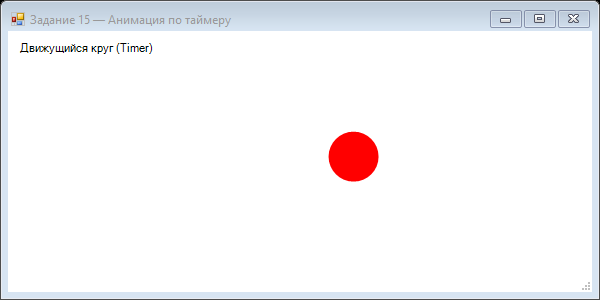

Урок 4.3: Таймер и анимация
📌 Ключевые моменты этого урока:
- Timer.Interval - паузa между Tick событиями (16ms = ~60 FPS, 50ms = 20 FPS)
- На каждом Tick событии обновляйте позиции: x += speed, затем Invalidate()
- Плавная анимация требует: малые шаги по времени + частый Invalidate
- Интерполяция - приближение к точке (x += (target - x) * 0.1 вместо x = target)
- Для 60 FPS используйте Interval = 16-17 ms; всегда DoubleBuffered = true
System.Windows.Forms.Timer
private Timer timer;
private int x = 0;
public Form1()
{
InitializeComponent();
timer = new Timer();
timer.Interval = 16; // ~60 FPS (1000/60)
timer.Tick += Timer_Tick;
timer.Start();
}
private void Timer_Tick(object sender, EventArgs e)
{
x += 5;
if (x > this.Width) x = 0;
this.Invalidate();
}Создание плавной анимации
private float x = 0;
private float speed = 2.5f;
private void Timer_Tick(object sender, EventArgs e)
{
x += speed;
if (x > this.Width) x = -50; // Сброс за пределы экрана
this.Invalidate();
}
private void Form1_Paint(object sender, PaintEventArgs e)
{
e.Graphics.FillEllipse(Brushes.Red, (int)x, 100, 50, 50);
}Расчет движения
// Движение с ускорением
private float x = 0, vx = 0;
private float acceleration = 0.1f;
private void Timer_Tick(object sender, EventArgs e)
{
vx += acceleration; // Увеличение скорости
x += vx;
if (x > this.Width) { x = 0; vx = 0; }
this.Invalidate();
}
// Движение по кругу
private float angle = 0;
private float radius = 100;
private Point center = new Point(400, 300);
private void Timer_Tick(object sender, EventArgs e)
{
angle += 0.05f;
float x = center.X + radius * (float)Math.Cos(angle);
float y = center.Y + radius * (float)Math.Sin(angle);
// Используйте x, y для позиции объекта
this.Invalidate();
}Практика: движущийся объект
Создайте анимацию мяча, который:
- Движется по экрану
- Отскакивает от краев
- Имеет гравитацию
📝 Пример задания — анимация по таймеру (Task15)
Красный круг движется по горизонтали и сбрасывается при выходе за правый край. Таймер с интервалом 30 мс обеспечивает ~33 FPS:
using System;
using System.Drawing;
using System.Windows.Forms;
namespace CSharpGraphicsApp
{
public class Task15_TimerAnimation : Form
{
private int posX = 0;
private readonly Timer timer = new Timer();
public Task15_TimerAnimation()
{
Text = "Задание 15 — Анимация по таймеру";
Size = new Size(600, 300);
BackColor = Color.White;
DoubleBuffered = true;
Paint += Form1_Paint;
timer.Interval = 30;
timer.Tick += Timer_Tick;
timer.Start();
FormClosed += (s, e) => timer.Stop();
}
private void Timer_Tick(object sender, EventArgs e)
{
posX += 5;
if (posX > ClientSize.Width)
posX = -50;
Invalidate();
}
private void Form1_Paint(object sender, PaintEventArgs e)
{
e.Graphics.SmoothingMode =
System.Drawing.Drawing2D.SmoothingMode.AntiAlias;
e.Graphics.FillEllipse(Brushes.Red, posX, 100, 50, 50);
e.Graphics.DrawString("Движущийся круг (Timer)",
SystemFonts.DefaultFont, Brushes.Black, 10, 10);
}
}
}Практическое задание
Задание: Анимация
- Создайте анимацию падающего мяча с отскоком
- Добавьте гравитацию и физику отскока
- Реализуйте возможность изменения скорости анимации
Задание по аналогии: Движущийся объект (Task15)
По аналогии с Task15_TimerAnimation создайте форму с анимацией, управляемой таймером.
- Создайте форму с
DoubleBuffered = trueи полемprivate int posX = 0. - В конструкторе создайте
Timerс интервалом 30 мс, запустите его. ВFormClosedостановите. - В
Timer_TickувеличивайтеposXна 5. КогдаposXвыходит за правый край, сбрасывайте в-50. ВызовитеInvalidate(). - В обработчике
Paintнарисуйте круг в позиции(posX, 100). - Дополнительно: добавьте второй объект, движущийся снизу вверх с другой скоростью.
Пример результата выполнения задания:

Скриншот программы (Task15)
Пример результата выполнения задания:
Скриншот программы (Task15)
💡 Совет: Интервал 16 мс (~60 FPS) плавнее, чем 30 мс (~33 FPS), но потребляет больше CPU. Выбирайте исходя из сложности сцены.
Проверка знаний
Ответьте на вопросы, чтобы проверить, насколько хорошо вы усвоили материал:
1. Какой класс используется для создания таймера в Windows Forms?
2. Какое свойство таймера задает интервал в миллисекундах?
3. Какой класс используется для создания анимации с таймером?